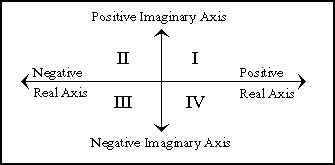

CLHS figures
All the CLHS figures in one place!
⚓
| For Evaluation? | Notation | Typically Implied Role |
|---|---|---|
| Yes | nil | use as a boolean |
| Yes | 'nil | use as a symbol |
| Yes | '() | use as an empty list |
| No | nil | use as a symbol or boolean |
| No | () | use as an empty list |
⚓
⚓
⚓
- &allow-other-keys
- &aux
- &body
- &environment
- &key
- &optional
- &rest
- &whole
- *
- **
- ***
- *break-on-signals*
- *compile-file-pathname*
- *compile-file-truename*
- *compile-print*
- *compile-verbose*
- *debug-io*
- *debugger-hook*
- *default-pathname-defaults*
- *error-output*
- *features*
- *gensym-counter*
- *load-pathname*
- *load-print*
- *load-truename*
- *load-verbose*
- *macroexpand-hook*
- *modules*
- *package*
- *print-array*
- *print-base*
- *print-case*
- *print-circle*
- *print-escape*
- *print-gensym*
- *print-length*
- *print-level*
- *print-lines*
- *print-miser-width*
- *print-pprint-dispatch*
- *print-pretty*
- *print-radix*
- *print-readably*
- *print-right-margin*
- *query-io*
- *random-state*
- *read-base*
- *read-default-float-format*
- *read-eval*
- *read-suppress*
- *readtable*
- *standard-input*
- *standard-output*
- *terminal-io*
- *trace-output*
- +
- ++
- +++
- -
- /
- //
- ///
- /=
- 1+
- 1-
- <
- <=
- =
- >
- >=
- abort
- abs
- acons
- acos
- acosh
- add-method
- adjoin
- adjust-array
- adjustable-array-p
- allocate-instance
- alpha-char-p
- alphanumericp
- and
- append
- apply
- apropos
- apropos-list
- aref
- arithmetic-error
- arithmetic-error-operands
- arithmetic-error-operation
- array
- array-dimension
- array-dimension-limit
- array-dimensions
- array-displacement
- array-element-type
- array-has-fill-pointer-p
- array-in-bounds-p
- array-rank
- array-rank-limit
- array-row-major-index
- array-total-size
- array-total-size-limit
- arrayp
- ash
- asin
- asinh
- assert
- assoc
- assoc-if
- assoc-if-not
- atan
- atanh
- atom
- base-char
- base-string
- bignum
- bit
- bit-and
- bit-andc1
- bit-andc2
- bit-eqv
- bit-ior
- bit-nand
- bit-nor
- bit-not
- bit-orc1
- bit-orc2
- bit-vector
- bit-vector-p
- bit-xor
- block
- boole
- boole-1
- boole-2
- boole-and
- boole-andc1
- boole-andc2
- boole-c1
- boole-c2
- boole-clr
- boole-eqv
- boole-ior
- boole-nand
- boole-nor
- boole-orc1
- boole-orc2
- boole-set
- boole-xor
- boolean
- both-case-p
- boundp
- break
- broadcast-stream
- broadcast-stream-streams
- built-in-class
- butlast
- byte
- byte-position
- byte-size
- caaaar
- caaadr
- caaar
- caadar
- caaddr
- caadr
- caar
- cadaar
- cadadr
- cadar
- caddar
- cadddr
- caddr
- cadr
- call-arguments-limit
- call-method
- call-next-method
- car
- case
- catch
- ccase
- cdaaar
- cdaadr
- cdaar
- cdadar
- cdaddr
- cdadr
- cdar
- cddaar
- cddadr
- cddar
- cdddar
- cddddr
- cdddr
- cddr
- cdr
- ceiling
- cell-error
- cell-error-name
- cerror
- change-class
- char
- char-code
- char-code-limit
- char-downcase
- char-equal
- char-greaterp
- char-int
- char-lessp
- char-name
- char-not-equal
- char-not-greaterp
- char-not-lessp
- char-upcase
- char/=
- char<
- char<=
- char=
- char>
- char>=
- character
- characterp
- check-type
- cis
- class
- class-name
- class-of
- clear-input
- clear-output
- close
- clrhash
- code-char
- coerce
- compilation-speed
- compile
- compile-file
- compile-file-pathname
- compiled-function
- compiled-function-p
- compiler-macro
- compiler-macro-function
- complement
- complex
- complexp
- compute-applicable-methods
- compute-restarts
- concatenate
- concatenated-stream
- concatenated-stream-streams
- cond
- condition
- conjugate
- cons
- consp
- constantly
- constantp
- continue
- control-error
- copy-alist
- copy-list
- copy-pprint-dispatch
- copy-readtable
- copy-seq
- copy-structure
- copy-symbol
- copy-tree
- cos
- cosh
- count
- count-if
- count-if-not
- ctypecase
- debug
- decf
- declaim
- declaration
- declare
- decode-float
- decode-universal-time
- defclass
- defconstant
- defgeneric
- define-compiler-macro
- define-condition
- define-method-combination
- define-modify-macro
- define-setf-expander
- define-symbol-macro
- defmacro
- defmethod
- defpackage
- defparameter
- defsetf
- defstruct
- deftype
- defun
- defvar
- delete
- delete-duplicates
- delete-file
- delete-if
- delete-if-not
- delete-package
- denominator
- deposit-field
- describe
- describe-object
- destructuring-bind
- digit-char
- digit-char-p
- directory
- directory-namestring
- disassemble
- division-by-zero
- do
- do*
- do-all-symbols
- do-external-symbols
- do-symbols
- documentation
- dolist
- dotimes
- double-float
- double-float-epsilon
- double-float-negative-epsilon
- dpb
- dribble
- dynamic-extent
- ecase
- echo-stream
- echo-stream-input-stream
- echo-stream-output-stream
- ed
- eighth
- elt
- encode-universal-time
- end-of-file
- endp
- enough-namestring
- ensure-directories-exist
- ensure-generic-function
- eq
- eql
- equal
- equalp
- error
- etypecase
- eval
- eval-when
- evenp
- every
- exp
- export
- expt
- extended-char
- fboundp
- fceiling
- fdefinition
- ffloor
- fifth
- file-author
- file-error
- file-error-pathname
- file-length
- file-namestring
- file-position
- file-stream
- file-string-length
- file-write-date
- fill
- fill-pointer
- find
- find-all-symbols
- find-class
- find-if
- find-if-not
- find-method
- find-package
- find-restart
- find-symbol
- finish-output
- first
- fixnum
- flet
- float
- float-digits
- float-precision
- float-radix
- float-sign
- floating-point-inexact
- floating-point-invalid-operation
- floating-point-overflow
- floating-point-underflow
- floatp
- floor
- fmakunbound
- force-output
- format
- formatter
- fourth
- fresh-line
- fround
- ftruncate
- ftype
- funcall
- function
- function-keywords
- function-lambda-expression
- functionp
- gcd
- generic-function
- gensym
- gentemp
- get
- get-decoded-time
- get-dispatch-macro-character
- get-internal-real-time
- get-internal-run-time
- get-macro-character
- get-output-stream-string
- get-properties
- get-setf-expansion
- get-universal-time
- getf
- gethash
- go
- graphic-char-p
- handler-bind
- handler-case
- hash-table
- hash-table-count
- hash-table-p
- hash-table-rehash-size
- hash-table-rehash-threshold
- hash-table-size
- hash-table-test
- host-namestring
- identity
- if
- ignorable
- ignore
- ignore-errors
- imagpart
- import
- in-package
- incf
- initialize-instance
- inline
- input-stream-p
- inspect
- integer
- integer-decode-float
- integer-length
- integerp
- interactive-stream-p
- intern
- internal-time-units-per-second
- intersection
- invalid-method-error
- invoke-debugger
- invoke-restart
- invoke-restart-interactively
- isqrt
- keyword
- keywordp
- labels
- lambda
- lambda-list-keywords
- lambda-parameters-limit
- last
- lcm
- ldb
- ldb-test
- ldiff
- least-negative-double-float
- least-negative-long-float
- least-negative-normalized-double-float
- least-negative-normalized-long-float
- least-negative-normalized-short-float
- least-negative-normalized-single-float
- least-negative-short-float
- least-negative-single-float
- least-positive-double-float
- least-positive-long-float
- least-positive-normalized-double-float
- least-positive-normalized-long-float
- least-positive-normalized-short-float
- least-positive-normalized-single-float
- least-positive-short-float
- least-positive-single-float
- length
- let
- let*
- lisp-implementation-type
- lisp-implementation-version
- list
- list*
- list-all-packages
- list-length
- listen
- listp
- load
- load-logical-pathname-translations
- load-time-value
- locally
- log
- logand
- logandc1
- logandc2
- logbitp
- logcount
- logeqv
- logical-pathname
- logical-pathname-translations
- logior
- lognand
- lognor
- lognot
- logorc1
- logorc2
- logtest
- logxor
- long-float
- long-float-epsilon
- long-float-negative-epsilon
- long-site-name
- loop
- loop-finish
- lower-case-p
- machine-instance
- machine-type
- machine-version
- macro-function
- macroexpand
- macroexpand-1
- macrolet
- make-array
- make-broadcast-stream
- make-concatenated-stream
- make-condition
- make-dispatch-macro-character
- make-echo-stream
- make-hash-table
- make-instance
- make-instances-obsolete
- make-list
- make-load-form
- make-load-form-saving-slots
- make-method
- make-package
- make-pathname
- make-random-state
- make-sequence
- make-string
- make-string-input-stream
- make-string-output-stream
- make-symbol
- make-synonym-stream
- make-two-way-stream
- makunbound
- map
- map-into
- mapc
- mapcan
- mapcar
- mapcon
- maphash
- mapl
- maplist
- mask-field
- max
- member
- member-if
- member-if-not
- merge
- merge-pathnames
- method
- method-combination
- method-combination-error
- method-qualifiers
- min
- minusp
- mismatch
- mod
- most-negative-double-float
- most-negative-fixnum
- most-negative-long-float
- most-negative-short-float
- most-negative-single-float
- most-positive-double-float
- most-positive-fixnum
- most-positive-long-float
- most-positive-short-float
- most-positive-single-float
- muffle-warning
- multiple-value-bind
- multiple-value-call
- multiple-value-list
- multiple-value-prog1
- multiple-value-setq
- multiple-values-limit
- name-char
- namestring
- nbutlast
- nconc
- next-method-p
- nil
- nintersection
- ninth
- no-applicable-method
- no-next-method
- not
- notany
- notevery
- notinline
- nreconc
- nreverse
- nset-difference
- nset-exclusive-or
- nstring-capitalize
- nstring-downcase
- nstring-upcase
- nsublis
- nsubst
- nsubst-if
- nsubst-if-not
- nsubstitute
- nsubstitute-if
- nsubstitute-if-not
- nth
- nth-value
- nthcdr
- null
- number
- numberp
- numerator
- nunion
- oddp
- open
- open-stream-p
- optimize
- or
- otherwise
- output-stream-p
- package
- package-error
- package-error-package
- package-name
- package-nicknames
- package-shadowing-symbols
- package-use-list
- package-used-by-list
- packagep
- pairlis
- parse-error
- parse-integer
- parse-namestring
- pathname
- pathname-device
- pathname-directory
- pathname-host
- pathname-match-p
- pathname-name
- pathname-type
- pathname-version
- pathnamep
- peek-char
- phase
- pi
- plusp
- pop
- position
- position-if
- position-if-not
- pprint
- pprint-dispatch
- pprint-exit-if-list-exhausted
- pprint-fill
- pprint-indent
- pprint-linear
- pprint-logical-block
- pprint-newline
- pprint-pop
- pprint-tab
- pprint-tabular
- prin1
- prin1-to-string
- princ
- princ-to-string
- print-not-readable
- print-not-readable-object
- print-object
- print-unreadable-object
- probe-file
- proclaim
- prog
- prog*
- prog1
- prog2
- progn
- program-error
- progv
- provide
- psetf
- psetq
- push
- pushnew
- quote
- random
- random-state
- random-state-p
- rassoc
- rassoc-if
- rassoc-if-not
- ratio
- rational
- rationalize
- rationalp
- read
- read-byte
- read-char
- read-char-no-hang
- read-delimited-list
- read-from-string
- read-line
- read-preserving-whitespace
- read-sequence
- reader-error
- readtable
- readtable-case
- readtablep
- real
- realp
- realpart
- reduce
- reinitialize-instance
- rem
- remf
- remhash
- remove
- remove-duplicates
- remove-if
- remove-if-not
- remove-method
- remprop
- rename-file
- rename-package
- replace
- require
- rest
- restart
- restart-bind
- restart-case
- restart-name
- return
- return-from
- revappend
- reverse
- room
- rotatef
- round
- row-major-aref
- rplaca
- rplacd
- safety
- satisfies
- sbit
- scale-float
- schar
- search
- second
- sequence
- serious-condition
- set
- set-difference
- set-dispatch-macro-character
- set-exclusive-or
- set-macro-character
- set-pprint-dispatch
- set-syntax-from-char
- setf
- setq
- seventh
- shadow
- shadowing-import
- shared-initialize
- shiftf
- short-float
- short-float-epsilon
- short-float-negative-epsilon
- short-site-name
- signal
- signed-byte
- signum
- simple-array
- simple-base-string
- simple-bit-vector
- simple-bit-vector-p
- simple-condition
- simple-condition-format-arguments
- simple-condition-format-control
- simple-error
- simple-string
- simple-string-p
- simple-type-error
- simple-vector
- simple-vector-p
- simple-warning
- sin
- single-float
- single-float-epsilon
- single-float-negative-epsilon
- sinh
- sixth
- sleep
- slot-boundp
- slot-exists-p
- slot-makunbound
- slot-missing
- slot-unbound
- slot-value
- software-type
- software-version
- some
- sort
- space
- special
- special-operator-p
- speed
- sqrt
- stable-sort
- standard
- standard-char
- standard-char-p
- standard-class
- standard-generic-function
- standard-method
- standard-object
- step
- storage-condition
- store-value
- stream
- stream-element-type
- stream-error
- stream-error-stream
- stream-external-format
- streamp
- string
- string-capitalize
- string-downcase
- string-equal
- string-greaterp
- string-left-trim
- string-lessp
- string-not-equal
- string-not-greaterp
- string-not-lessp
- string-right-trim
- string-stream
- string-trim
- string-upcase
- string/=
- string<
- string<=
- string=
- string>
- string>=
- stringp
- structure
- structure-class
- structure-object
- style-warning
- sublis
- subseq
- subsetp
- subst
- subst-if
- subst-if-not
- substitute
- substitute-if
- substitute-if-not
- subtypep
- svref
- sxhash
- symbol
- symbol-function
- symbol-macrolet
- symbol-name
- symbol-package
- symbol-plist
- symbol-value
- symbolp
- synonym-stream
- synonym-stream-symbol
- t
- tagbody
- tailp
- tan
- tanh
- tenth
- terpri
- the
- third
- throw
- time
- trace
- translate-logical-pathname
- translate-pathname
- tree-equal
- truename
- truncate
- two-way-stream
- two-way-stream-input-stream
- two-way-stream-output-stream
- type
- type-error
- type-error-datum
- type-error-expected-type
- type-of
- typecase
- typep
- unbound-slot
- unbound-slot-instance
- unbound-variable
- undefined-function
- unexport
- unintern
- union
- unless
- unread-char
- unsigned-byte
- untrace
- unuse-package
- unwind-protect
- update-instance-for-different-class
- update-instance-for-redefined-class
- upgraded-array-element-type
- upgraded-complex-part-type
- upper-case-p
- use-package
- use-value
- user-homedir-pathname
- values
- values-list
- variable
- vector
- vector-pop
- vector-push
- vector-push-extend
- vectorp
- warn
- warning
- when
- wild-pathname-p
- with-accessors
- with-compilation-unit
- with-condition-restarts
- with-hash-table-iterator
- with-input-from-string
- with-open-file
- with-open-stream
- with-output-to-string
- with-package-iterator
- with-simple-restart
- with-slots
- with-standard-io-syntax
- write
- write-byte
- write-char
- write-line
- write-sequence
- write-string
- write-to-string
- y-or-n-p
- yes-or-no-p
- zerop
⚓
⚓
⚓
⚓
| Graphic ID | Glyph | Description |
|---|---|---|
| LA01 | a | small a |
| LA02 | A | capital A |
| LB01 | b | small b |
| LB02 | B | capital B |
| LC01 | c | small c |
| LC02 | C | capital C |
| LD01 | d | small d |
| LD02 | D | capital D |
| LE01 | e | small e |
| LE02 | E | capital E |
| LF01 | f | small f |
| LF02 | F | capital F |
| LG01 | g | small g |
| LG02 | G | capital G |
| LH01 | h | small h |
| LH02 | H | capital H |
| LI01 | i | small i |
| LI02 | I | capital I |
| LJ01 | j | small j |
| LJ02 | J | capital J |
| LK01 | k | small k |
| LK02 | K | capital K |
| LL01 | l | small l |
| LL02 | L | capital L |
| LM01 | m | small m |
| LM02 | M | capital M |
| LN01 | n | small n |
| LN02 | N | capital N |
| LO01 | o | small o |
| LO02 | O | capital O |
| LP01 | p | small p |
| LP02 | P | capital P |
| LQ01 | q | small q |
| LQ02 | Q | capital Q |
| LR01 | r | small r |
| LR02 | R | capital R |
| LS01 | s | small s |
| LS02 | S | capital S |
| LT01 | t | small t |
| LT02 | T | capital T |
| LU01 | u | small u |
| LU02 | U | capital U |
| LV01 | v | small v |
| LV02 | V | capital V |
| LW01 | w | small w |
| LW02 | W | capital W |
| LX01 | x | small x |
| LX02 | X | capital X |
| LY01 | y | small y |
| LY02 | Y | capital Y |
| LZ01 | z | small z |
| LZ02 | Z | capital Z |
⚓
| Graphic ID | Glyph | Description |
|---|---|---|
| ND01 | 1 | digit 1 |
| ND02 | 2 | digit 2 |
| ND03 | 3 | digit 3 |
| ND04 | 4 | digit 4 |
| ND05 | 5 | digit 5 |
| ND06 | 6 | digit 6 |
| ND07 | 7 | digit 7 |
| ND08 | 8 | digit 8 |
| ND09 | 9 | digit 9 |
| ND10 | 0 | digit 0 |
⚓
| Graphic ID | Glyph | Description |
|---|---|---|
| SP02 | ! | exclamation mark |
| SC03 | $ | dollar sign |
| SP04 | " | quotation mark, or double quote |
| SP05 | ' | apostrophe, or [single] quote |
| SP06 | ( | left parenthesis, or open parenthesis |
| SP07 | ) | right parenthesis, or close parenthesis |
| SP08 | , | comma |
| SP09 | _ | low line, or underscore |
| SP10 | - | hyphen, or minus [sign] |
| SP11 | . | full stop, period, or dot |
| SP12 | / | solidus, or slash |
| SP13 | : | colon |
| SP14 | ; | semicolon |
| SP15 | ? | question mark |
| SA01 | + | plus [sign] |
| SA03 | < | less-than [sign] |
| SA04 | = | equals [sign] |
| SA05 | > | greater-than [sign] |
| SM01 | # | number sign, or sharp[sign] |
| SM02 | % | percent [sign] |
| SM03 | & | ampersand |
| SM04 | * | asterisk, or star |
| SM05 | @ | commercial at, or at-sign |
| SM06 | [ | left [square] bracket |
| SM07 | \ | reverse solidus, or backslash |
| SM08 | ] | right [square] bracket |
| SM11 | { | left curly bracket, or left brace |
| SM13 | | | vertical bar |
| SM14 | } | right curly bracket, or right brace |
| SD13 | ` | grave accent, or backquote |
| SD15 | ^ | circumflex accent |
| SD19 | ~ | tilde |
⚓
⚓
(Slight alterations to the format of the following table have been made to enhance usability.)
(TODO: Linkify syntax types)
| character | syntax type | additional information |
|---|---|---|
| Backspace | constituent | |
| Tab | whitespace | |
| Newline | whitespace | |
| Linefeed | whitespace | |
| Page | whitespace | |
| Return | whitespace | |
| Space | whitespace | |
| ! | constituent | Reserved to programmers |
| " | terminating macro char | |
| # | non-terminating char | |
| $ | constituent | Unused in standard names |
| % | constituent | |
| & | constituent | |
| ' | terminating macro char | |
| ( | terminating macro char | |
| ) | terminating macro char | |
| * | constituent | |
| + | constituent | |
| , | terminating macro char | |
| - | constituent | |
| . | constituent | |
| / | constituent | |
| 0 to 9 | constituent | |
| : | constituent | |
| ; | terminating macro char | |
| < | constituent | |
| = | constituent | |
| > | constituent | |
| ? | constituent | Reserved to programmers |
| @ | constituent | |
| A to Z | constituent | |
| [ | constituent | Reserved to programmers |
| \ | single escape | |
| ] | constituent | Reserved to programmers |
| ^ | constituent | |
| _ | constituent | |
| ` | terminating macro char | |
| a to z | constituent | |
| { | constituent | Reserved to programmers |
| | | multiple escape | |
| } | constituent | Reserved to programmers |
| ~ | constituent | Reserved to implementors |
| Rubout | constituent |
⚓
(Slight alterations to the format of the following table have been made to enhance usability.)
(TODO: Linkify constituent traits)
| character | constituent traits | Normally shadowed? |
|---|---|---|
| Backspace | invalid | |
| Tab | invalid | ✔ |
| Newline | invalid | ✔ |
| Linefeed | invalid | ✔ |
| Page | invalid | ✔ |
| Return | invalid | ✔ |
| Space | invalid | ✔ |
| ! | alphabetic | |
| " | alphabetic | |
| # | alphabetic | ✔ |
| $ | alphabetic | |
| % | alphabetic | |
| & | alphabetic | |
| ' | alphabetic | ✔ |
| ( | alphabetic | ✔ |
| ) | alphabetic | ✔ |
| * | alphabetic | |
| , | alphabetic | ✔ |
| 0 to 9 | alphadigit | |
| : | package marker | |
| ; | alphabetic | ✔ |
| < | alphabetic | |
| = | alphabetic | |
| > | alphabetic | |
| ? | alphabetic | |
| @ | alphabetic | |
| [ | alphabetic | |
| \ | alphabetic | ✔ |
| ] | alphabetic | |
| ^ | alphabetic | |
| _ | alphabetic | |
| ` | alphabetic | ✔ |
| | | alphabetic | ✔ |
| ~ | alphabetic | |
| { | alphabetic | |
| } | alphabetic | |
| + | alphabetic, plus sign | |
| - | alphabetic, minus sign | |
| . | alphabetic, dot, decimal point | |
| / | alphabetic, ratio marker | |
| A a | alphadigit | |
| B b | alphadigit | |
| C c | alphadigit | |
| D d | alphadigit, double-float exponent marker | |
| E e | alphadigit, float exponent-marker | |
| F f | alphadigit, single-float exponent marker | |
| G g | alphadigit | |
| H h | alphadigit | |
| I i | alphadigit | |
| J j | alphadigit | |
| K k | alphadigit | |
| L l | alphadigit, long-float exponent marker | |
| M m | alphadigit | |
| N n | alphadigit | |
| O o | alphadigit | |
| P p | alphadigit | |
| Q q | alphadigit | |
| R r | alphadigit | |
| S s | alphadigit, short-float exponent marker | |
| T t | alphadigit | |
| U u | alphadigit | |
| V v | alphadigit | |
| W w | alphadigit | |
| X x | alphadigit | |
| Y y | alphadigit | |
| Z z | alphadigit | |
| Rubout | invalid |
⚓
numeric-token ::= integer |
ratio |
float
integer ::= [sign]
decimal-digit+
decimal-point |
[sign]
digit+
ratio ::= [sign]
{digit}+
slash
{digit}+
float ::= [sign]
{decimal-digit}*
decimal-point
{decimal-digit}+
[exponent]
|
[sign]
{decimal-digit}+
[decimal-point
{decimal-digit}*]
exponent
exponent ::= exponent-marker
[sign]
{digit}+
- sign
- a sign.
- slash
- a slash
- decimal-point
- a dot.
- exponent-marker
- an exponent marker.
- decimal-digit
- a digit in radix 10.
- digit
- a digit in the current input radix.
⚓
- 1b5000
- 27^19
- 3.141_592_653_589_793_238_4
- 777777q
- 3^4/5
- -3.7+2.6i-6.17j+19.6k
- 1.7J
- 6//7
- -3/4+6.7J
- 3.1.2.6
- 12/25/83
- ^-43^
⚓
- /
- foo+
- /5
- ab.cd
- +
- _
- 1+
- ^
- 1-
- ^/-
⚓
- bad-face
- 25-dec-83
- a/b
- fad_cafe
- f^
⚓
| 2/3 | This is in canonical form |
| 4/6 | A non-canonical form for 2/3 |
| -17/23 | A ratio preceded by a sign |
| -30517578125/32768 | This is (-5/2)^15 |
| 10/5 | The canonical form for this is 2 |
| #o-101/75 | Octal notation for -65/61 |
| #3r120/21 | Ternary notation for 15/7 |
| #Xbc/ad | Hexadecimal notation for 188/173 |
| #xFADED/FACADE | Hexadecimal notation for 1027565/16435934 |
⚓
| 0.0 | Floating-point zero in default format |
| 0E0 | As input, this is also floating-point zero in default format. As output, this would appear as 0.0. |
| 0e0 | As input, this is also floating-point zero in default format. As output, this would appear as 0.0. |
| -.0 | As input, this might be a zero or a minus zero, depending on whether the implementation supports a distinct minus zero. As output, 0.0 is zero and -0.0 is minus zero. |
| 0. | On input, the integer zero---not a floating-point number! Whether this appears as 0 or 0. on output depends on the value of *print-radix*. |
| 0.0s0 | A floating-point zero in short format |
| 0s0 | As input, this is a floating-point zero in short format. As output, such a zero would appear as 0.0s0 (or as 0.0 if short-float was the default format). |
| 6.02E+23 | Avogadro's number, in default format |
| 602E+21 | Also Avogadro's number, in default format |
⚓
| FROBBOZ | The symbol whose name is FROBBOZ. |
| frobboz | Another way to notate the same symbol. |
| fRObBoz | Yet another way to notate it. |
| unwind-protect | A symbol with a hyphen in its name. |
| +$ | The symbol named +$. |
| 1+ | The symbol named 1+. |
| +1 | This is the integer 1, not a symbol. |
| pascal_style | This symbol has an underscore in its name. |
| file.rel.43 | This symbol has periods in its name. |
| \( | The symbol whose name is (. |
| \+1 | The symbol whose name is +1. |
| +\1 | Also the symbol whose name is +1. |
| \frobboz | The symbol whose name is fROBBOZ. |
| 3.14159265\s0 | The symbol whose name is 3.14159265s0. |
| 3.14159265\S0 | A different symbol, whose name is 3.14159265S0. |
| 3.14159265s0 | A possible short float approximation to <PI>. |
| APL\\360 | The symbol whose name is APL\360. |
| apl\\360 | Also the symbol whose name is APL\360. |
| \(b^2\)\-\4*a*c | The name is (B^2) - 4*A*C. Parentheses and two spaces in it. |
| \(\b^2\)\-\4*\a*\c | The name is (b^2) - 4*a*c. Letters explicitly lowercase. |
| |"| | The same as writing \". |
| |(b^2) - 4*a*c| | The name is (b^2) - 4*a*c. |
| |frobboz| | The name is frobboz, not FROBBOZ. |
| |APL\360| | The name is APL360. |
| |APL\\360| | The name is APL\360. |
| |apl\\360| | The name is apl\360. |
| |\|\|| | Same as \|\| ---the name is ||. |
| |(B^2) - 4*A*C| | The name is (B^2) - 4*A*C. Parentheses and two spaces in it. |
| |(b^2) - 4*a*c| | The name is (b^2) - 4*a*c. |
⚓
| nnnnn | a number |
| xxxxx | a symbol in the current package |
| :xxxxx | a symbol in the the KEYWORD package |
| ppppp:xxxxx | an external symbol in the ppppp package |
| ppppp::xxxxx | a (possibly internal) symbol in the ppppp package |
| :nnnnn | undefined |
| ppppp:nnnnn | undefined |
| ppppp::nnnnn | undefined |
| ::aaaaa | undefined |
| aaaaa: | undefined |
| aaaaa:aaaaa:aaaaa | undefined |
⚓
| "Foo" | A string with three characters in it |
| "" | An empty string |
| "\"APL\\360?\" he cried." | A string with twenty characters |
| "|x| = |-x|" | A ten-character string |
⚓
| dispatch char | purpose | Reserved to user? |
|---|---|---|
| Backspace | signals error | |
| Tab | signals error | |
| Newline | signals error | |
| Linefeed | signals error | |
| Page | signals error | |
| Return | signals error | |
| Space | signals error | |
| ! | undefined | ✔ |
| " | undefined | |
| # | reference to = label | |
| $ | undefined | |
| % | undefined | |
| & | undefined | |
| ' | function abbreviation | |
| ( | simple vector | |
| ) | signals error | |
| * | bit vector | |
| , | undefined | |
| : | uninterned symbol | |
| ; | undefined | |
| < | signals error | |
| = | labels following object | |
| > | undefined | |
| ? | undefined | ✔ |
| @ | undefined | |
| [ | undefined | ✔ |
| \ | character object | ✔ |
| ] | undefined | ✔ |
| ^ | undefined | |
| _ | undefined | |
| ` | undefined | |
| | | balanced comment | |
| ~ | undefined | |
| { | undefined | ✔ |
| } | undefined | ✔ |
| + | read-time conditional | |
| - | read-time conditional | |
| . | read-time evaluation | |
| / | undefined | |
| A a | array | |
| B b | binary rational | |
| C c | complex number | |
| D d | undefined | |
| E e | undefined | |
| F f | undefined | |
| G g | undefined | |
| H h | undefined | |
| I i | undefined | |
| J j | undefined | |
| K k | undefined | |
| L l | undefined | |
| M m | undefined | |
| N n | undefined | |
| O o | octal rational | |
| P p | pathname | |
| Q q | undefined | |
| R r | radix-n rational | |
| S s | structure | |
| T t | undefined | |
| U u | undefined | |
| V v | undefined | |
| W w | undefined | |
| X x | hexadecimal rational | |
| Y y | undefined | |
| Z z | undefined | |
| Rubout | undefined |
⚓
| #2r11010101 | Another way of writing 213 decimal |
| #b11010101 | Ditto |
| #b+11010101 | Ditto |
| #o325 | Ditto, in octal radix |
| #xD5 | Ditto, in hexadecimal radix |
| #16r+D5 | Ditto |
| #o-300 | Decimal -192, written in base 8 |
| #3r-21010 | Same thing in base 3 |
| #25R-7H | Same thing in base 25 |
| #xACCEDED | 181202413, in hexadecimal radix |
⚓
| #C(3.0s1 2.0s-1) | A complex with small float parts. |
| #C(5 -3) | A ``Gaussian integer'' |
| #C(5/3 7.0) | Will be converted internally to #C(1.66666 7.0) |
| #C(0 1) | The imaginary unit; that is, i. |
⚓
⚓
⚓
⚓
⚓
⚓
| :compile-toplevel | :load-toplevel | :execute | Processing mode | Action | New mode |
|---|---|---|---|---|---|
| Yes | Yes | ∅ | Process | compile-time-too | |
| No | Yes | Yes | compile-time-too | Process | compile-time-too |
| No | Yes | Yes | not-compile-time | Process | not-compile-time |
| No | Yes | No | ∅ | Process | not-compile-time |
| Yes | No | ∅ | Evaluate | ∅ | |
| No | No | Yes | compile-time-too | Evaluate | |
| No | No | Yes | not-compile-time | Discard | |
| No | No | No | ∅ | Discard | |
⚓
⚓
⚓
| Context | Kind of Lambda List |
|---|---|
| defun form | ordinary lambda list |
| defmacro form | macro lambda list |
| lambda expression | ordinary lambda list |
| flet local function definition | ordinary lambda list |
| labels local function definition | ordinary lambda list |
| handler-case clause specification | ordinary lambda list |
| restart-case clause specification | ordinary lambda list |
| macrolet local macro definition | macro lambda list |
| define-method-combination | ordinary lambda list |
| define-method-combination :arguments option | define-method-combination arguments lambda list |
| defstruct :constructor option | boa lambda list |
| defgeneric form | generic function lambda list |
| defgeneric method clause | specialized lambda list |
| defmethod form | specialized lambda list |
| defsetf form | defsetf lambda list |
| define-setf-expander form | macro lambda list |
| deftype form | deftype lambda list |
| destructuring-bind form | destructuring lambda list |
| define-compiler-macro form | macro lambda list |
| define-modify-macro form | define-modify-macro lambda list |
⚓
⚓
⚓
⚓
⚓
⚓
⚓
⚓
⚓
⚓
⚓
⚓
| Section | Data Type |
|---|---|
| Section 4.3 (Classes) | Object System types |
| Section 7.5 (Slots) | Object System types |
| Section 7 (Objects) | Object System types |
| Section 7.6 (Generic Functions and Methods) | Object System types |
| Section 9.1 (Condition System Concepts) | Condition System types |
| Section 4 (Types and Classes) | Miscellaneous types |
| Section 2 (Syntax) | All types---read and print syntax |
| Section 22.1 (The Lisp Printer) | All types---print syntax |
| Section 3.2 (Compilation) | All types---compilation issues |
⚓
- arithmetic-error
- array
- atom
- base-char
- base-string
- bignum
- bit
- bit-vector
- broadcast-stream
- built-in-class
- cell-error
- character
- class
- compiled-function
- complex
- concatenated-stream
- condition
- cons
- control-error
- division-by-zero
- double-float
- echo-stream
- end-of-file
- error
- extended-char
- file-error
- file-stream
- fixnum
- float
- floating-point-inexact
- floating-point-invalid-operation
- floating-point-overflow
- floating-point-underflow
- function
- generic-function
- hash-table
- integer
- keyword
- list
- logical-pathname
- long-float
- method
- method-combination
- nil
- null
- number
- package
- package-error
- parse-error
- pathname
- print-not-readable
- program-error
- random-state
- ratio
- rational
- reader-error
- readtable
- real
- restart
- sequence
- serious-condition
- short-float
- signed-byte
- simple-array
- simple-base-string
- simple-bit-vector
- simple-condition
- simple-error
- simple-string
- simple-type-error
- simple-vector
- simple-warning
- single-float
- standard-char
- standard-class
- standard-generic-function
- standard-method
- standard-object
- storage-condition
- stream
- stream-error
- string
- string-stream
- structure-class
- structure-object
- style-warning
- symbol
- synonym-stream
- t
- two-way-stream
- type-error
- unbound-slot
- unbound-variable
- undefined-function
- unsigned-byte
- vector
- warning
⚓
⚓
⚓
⚓
- arithmetic-error
- array
- atom
- base-char
- base-string
- bignum
- bit
- bit-vector
- broadcast-stream
- built-in-class
- cell-error
- character
- class
- compiled-function
- complex
- concatenated-stream
- condition
- cons
- control-error
- division-by-zero
- double-float
- echo-stream
- end-of-file
- error
- extended-char
- file-error
- file-stream
- fixnum
- float
- floating-point-inexact
- floating-point-invalid-operation
- floating-point-overflow
- floating-point-underflow
- function
- generic-function
- hash-table
- integer
- keyword
- list
- logical-pathname
- long-float
- method
- method-combination
- nil
- null
- number
- package
- package-error
- parse-error
- pathname
- print-not-readable
- program-error
- random-state
- ratio
- rational
- reader-error
- readtable
- real
- restart
- sequence
- serious-condition
- short-float
- signed-byte
- simple-array
- simple-base-string
- simple-bit-vector
- simple-condition
- simple-error
- simple-string
- simple-type-error
- simple-vector
- simple-warning
- single-float
- standard-char
- standard-class
- standard-generic-function
- standard-method
- standard-object
- storage-condition
- stream
- stream-error
- string
- string-stream
- structure-class
- structure-object
- style-warning
- symbol
- synonym-stream
- t
- two-way-stream
- type-error
- unbound-slot
- unbound-variable
- undefined-function
- unsigned-byte
- vector
- warning
⚓
⚓
- arithmetic-error
- array
- bit-vector
- broadcast-stream
- built-in-class
- cell-error
- character
- class
- complex
- concatenated-stream
- condition
- cons
- control-error
- division-by-zero
- echo-stream
- end-of-file
- error
- file-error
- file-stream
- float
- floating-point-inexact
- floating-point-invalid-operation
- floating-point-overflow
- floating-point-underflow
- function
- generic-function
- hash-table
- integer
- list
- logical-pathname
- method
- method-combination
- null
- number
- package
- package-error
- parse-error
- pathname
- print-not-readable
- program-error
- random-state
- ratio
- rational
- reader-error
- readtable
- real
- restart
- sequence
- serious-condition
- simple-condition
- simple-error
- simple-type-error
- simple-warning
- standard-class
- standard-generic-function
- standard-method
- standard-object
- storage-condition
- stream
- stream-error
- string
- string-stream
- structure-class
- structure-object
- style-warning
- symbol
- synonym-stream
- t
- two-way-stream
- type-error
- unbound-slot
- unbound-variable
- undefined-function
- vector
- warning
⚓
| Access function | Update Function | Update using setf |
|---|---|---|
| x | (setq x datum) | (setf x datum) |
| (car x) | (rplaca x datum) | (setf (car x) datum) |
| (symbol-value x) | (set x datum) | (setf (symbol-value x) datum) |
⚓
⚓
For a variable x:
| () | list of temporary variables |
| () | list of value forms |
| (g0001) | list of store variables |
| (setq x g0001) | storing form |
| x | accessing form |
⚓
For (car exp):
| (g0002) | list of temporary variables |
| (exp) | list of value forms |
| (g0003) | list of store variables |
| (progn (rplaca g0002 g0003) g0003) | storing form |
| (car g0002) | accessing form |
⚓
For (subseq seq s e):
| (g0004 g0005 g0006) | list of temporary variables |
| (seq s e) | list of value forms |
| (g0007) | list of store variables |
(progn
(replace g0004 g0007
:start1 g0005 :end1 g0006)
g0007) |
storing form |
| (subseq g0004 g0005 g0006) | accessing form |
⚓
[...] For (ldb bs (car exp)):
| (g0001 g0002) | list of temporary variables |
| (bs exp) | list of value forms |
| (g0003) | list of store variables |
(progn
(rplaca g0002
(dpb g0003 g0001 (car g0002)))
g0003) |
storing form |
| (ldb g0001 (car g0002)) | accessing form |
⚓
- aref
- bit
- caaaar
- caaadr
- caaar
- caadar
- caaddr
- caadr
- caar
- cadaar
- cadadr
- cadar
- caddar
- cadddr
- caddr
- cadr
- car
- cdaaar
- cdaadr
- cdaar
- cdadar
- cdaddr
- cdadr
- cdar
- cddaar
- cddadr
- cddar
- cdddar
- cddddr
- cdddr
- cddr
- cdr
- char
- class-name
- compiler-macro-function
- documentation
- eighth
- elt
- fdefinition
- fifth
- fill-pointer
- find-class
- first
- fourth
- get
- gethash
- logical-pathname-translations
- macro-function
- ninth
- nth
- readtable-case
- rest
- row-major-aref
- sbit
- schar
- second
- seventh
- sixth
- slot-value
- subseq
- svref
- symbol-function
- symbol-plist
- symbol-value
- tenth
- third
⚓
| Function name | Argument that is a place | Update function used |
|---|---|---|
| ldb | second | dpb |
| mask-field | second | deposit-field |
| getf | first | implementation-dependent |
⚓
⚓
⚓
⚓
- arithmetic-error
- cell-error
- condition
- control-error
- division-by-zero
- end-of-file
- error
- file-error
- floating-point-inexact
- floating-point-invalid-operation
- floating-point-overflow
- floating-point-underflow
- package-error
- parse-error
- print-not-readable
- program-error
- reader-error
- serious-condition
- simple-condition
- simple-error
- simple-type-error
- simple-warning
- storage-condition
- stream-error
- style-warning
- type-error
- unbound-slot
- unbound-variable
- undefined-function
- warning
⚓
⚓
⚓
⚓
⚓
⚓
⚓
⚓
⚓
| Name | Nicknames |
|---|---|
| COMMON-LISP | CL |
| COMMON-LISP-USER | CL-USER |
| KEYWORD | none |
⚓
⚓
⚓
⚓
⚓
⚓
⚓
- double-float-epsilon
- double-float-negative-epsilon
- least-negative-double-float
- least-negative-long-float
- least-negative-short-float
- least-negative-single-float
- least-positive-double-float
- least-positive-long-float
- least-positive-short-float
- least-positive-single-float
- long-float-epsilon
- long-float-negative-epsilon
- most-negative-double-float
- most-negative-fixnum
- most-negative-long-float
- most-negative-short-float
- most-negative-single-float
- most-positive-double-float
- most-positive-fixnum
- most-positive-long-float
- most-positive-short-float
- most-positive-single-float
- short-float-epsilon
- short-float-negative-epsilon
- single-float-epsilon
- single-float-negative-epsilon
⚓
| Function | Sample Results | |
|---|---|---|
| abs | (abs #c(3 4)) | 5 or 5.0 |
| acos | (acos 1) | 0 or 0.0 |
| acosh | (acosh 1) | 0 or 0.0 |
| asin | (asin 0) | 0 or 0.0 |
| asinh | (asinh 0) | 0 or 0.0 |
| atan | (atan 0) | 0 or 0.0 |
| atanh | (atanh 0) | 0 or 0.0 |
| cis | (cis 0) | 1 or #c(1.0 0.0) |
| cos | (cos 0) | 1 or 1.0 |
| cosh | (cosh 0) | 1 or 1.0 |
| exp | (exp 0) | 1 or 1.0 |
| expt | (expt 8 1/3) | 2 or 2.0 |
| log | (log 1) | 0 or 0.0 |
| (log 8 2) | 3 or 3.0 | |
| phase | (phase 7) | 0 or 0.0 |
| signum | (signum #c(3 4)) | #c(3/5 4/5) or #c(0.6 0.8) |
| sin | (sin 0) | 0 or 0.0 |
| sinh | (sinh 0) | 0 or 0.0 |
| sqrt | (sqrt 4) | 2 or 2.0 |
| (sqrt 9/16) | 3/4 or 0.75 | |
| tan | (tan 0) | 0 or 0.0 |
| tanh | (tanh 0) | 0 or 0.0 |
⚓
| sin i z = i sinh z | sinh i z = i sin z | arctan i z = i arctanh z |
| cos i z = cosh z | cosh i z = cos z | arcsinh i z = i arcsin z |
| tan i z = i tanh z | arcsin i z = i arcsinh z | arctanh i z = i arctan z |
⚓

⚓
⚓
⚓
⚓
⚓
⚓
⚓
(assocation)⚓
- char
- make-string
- nstring-capitalize
- nstring-downcase
- nstring-upcase
- schar
- string
- string-capitalize
- string-downcase
- string-equal
- string-greaterp
- string-left-trim
- string-lessp
- string-not-equal
- string-not-greaterp
- string-not-lessp
- string-right-trim
- string-trim
- string-upcase
- string/=
- string<
- string<=
- string=
- string>
- string>=
⚓
⚓
- concatenate
- copy-seq
- count
- count-if
- count-if-not
- delete
- delete-duplicates
- delete-if
- delete-if-not
- elt
- every
- fill
- find
- find-if
- find-if-not
- length
- map
- map-into
- merge
- mismatch
- notany
- notevery
- nreverse
- nsubstitute
- nsubstitute-if
- nsubstitute-if-not
- position
- position-if
- position-if-not
- reduce
- remove
- remove-duplicates
- remove-if
- remove-if-not
- replace
- reverse
- search
- some
- sort
- stable-sort
- subseq
- substitute
- substitute-if
- substitute-if-not
⚓
⚓
⚓
⚓
- *default-pathname-defaults*
- directory-namestring
- enough-namestring
- file-namestring
- file-string-length
- host-namestring
- make-pathname
- merge-pathnames
- namestring
- open
- parse-namestring
- pathname
- pathname-device
- pathname-directory
- pathname-host
- pathname-match-p
- pathname-name
- pathname-type
- pathname-version
- pathnamep
- translate-pathname
- truename
- user-homedir-pathname
- wild-pathname-p
⚓
⚓
| Symbol | Meaning |
|---|---|
| :wild | Wildcard match of one level of directory structure |
| :wild-inferiors | Wildcard match of any number of directory levels |
| :up | Go upward in directory structure (semantic) |
| :back | Go upward in directory structure (syntactic) |
⚓
⚓
⚓
⚓
⚓
⚓
⚓
⚓
| Glossary Term | Variable Name |
|---|---|
| debug I/O | *debug-io* |
| error output | *error-output* |
| query I/O | *query-io* |
| standard input | *standard-input* |
| standard output | *standard-output* |
| terminal I/O | *terminal-io* |
| trace output | *trace-output* |
⚓
(echo-stream-ouput-stream)- broadcast-stream-streams
- close
- compile-file
- compile-file-pathname
- concatenated-stream-streams
- delete-file
- directory
- directory-namestring
- dribble
- echo-stream-input-stream
- echo-stream-output-stream
- ed
- enough-namestring
- file-author
- file-namestring
- file-write-date
- host-namestring
- load
- logical-pathname
- merge-pathnames
- namestring
- open
- open-stream-p
- parse-namestring
- pathname
- pathname-match-p
- pathnamep
- probe-file
- rename-file
- streamp
- synonym-stream-symbol
- translate-logical-pathname
- translate-pathname
- truename
- two-way-stream-input-stream
- two-way-stream-output-stream
- wild-pathname-p
- with-open-file
⚓
- clear-input
- clear-output
- file-length
- file-position
- file-string-length
- finish-output
- force-output
- format
- fresh-line
- get-output-stream-string
- input-stream-p
- interactive-stream-p
- listen
- make-broadcast-stream
- make-concatenated-stream
- make-echo-stream
- make-synonym-stream
- make-two-way-stream
- output-stream-p
- peek-char
- pprint
- pprint-fill
- pprint-indent
- pprint-linear
- pprint-logical-block
- pprint-newline
- pprint-tab
- pprint-tabular
- prin1
- princ
- print-object
- print-unreadable-object
- read
- read-byte
- read-char
- read-char-no-hang
- read-delimited-list
- read-line
- read-preserving-whitespace
- stream-element-type
- stream-external-format
- terpri
- unread-char
- with-open-stream
- write
- write-byte
- write-char
- write-line
- write-string
- y-or-n-p
- yes-or-no-p
⚓
⚓
⚓
<-1---<--<--2---3->--4-->->
000000000000000000000000000
11 111111111111111111111111
22 222
333 3333
44444444444444 44444
⚓
⚓
- (cons #+spice "Spice" #-spice "Lispm" x)
- in implementation A ... (CONS "Spice" X)
- in implementation B ... (CONS "Lispm" X)
- in implementation C ... (CONS "Lispm" X)
- (cons #+spice "Spice" #+LispM "Lispm" x)
- in implementation A ... (CONS "Spice" X)
- in implementation B ... (CONS "Lispm" X)
- in implementation C ... (CONS X)
- (setq a '(1 2 #+perq 43 #+(not perq) 27))
- in implementation A ... (SETQ A '(1 2 43))
- in implementation B ... (SETQ A '(1 2 27))
- in implementation C ... (SETQ A '(1 2 27))
- (let ((a 3) #+(or spice lispm) (b 3)) (foo a))
- in implementation A ... (LET ((A 3) (B 3)) (FOO A))
- in implementation B ... (LET ((A 3) (B 3)) (FOO A))
- in implementation C ... (LET ((A 3)) (FOO A))
- (cons #+Lispm "#+Spice" #+Spice "foo" #-(or Lispm Spice) 7 x)
- in implementation A ... (CONS "foo" X)
- in implementation B ... (CONS "#+Spice" X)
- in implementation C ... (CONS 7 X)